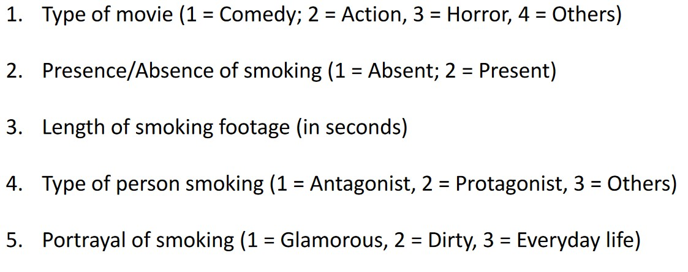
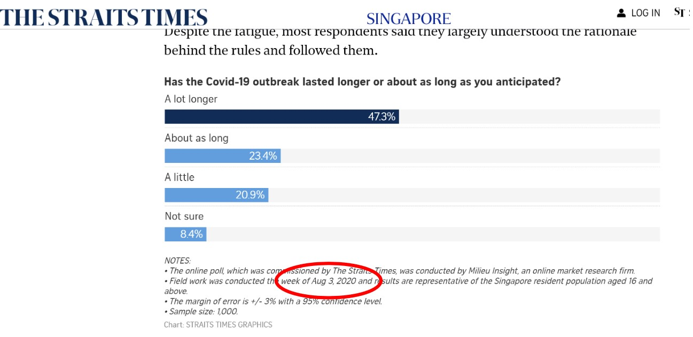
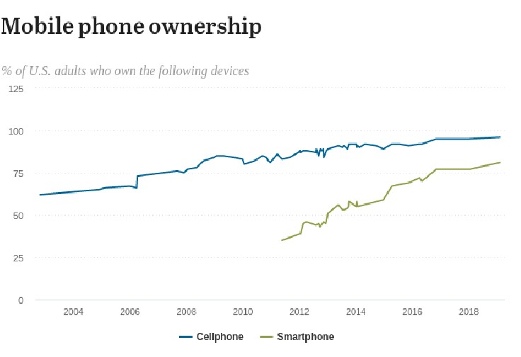
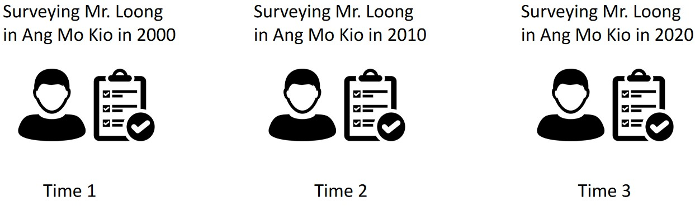

2 Scientific Study of Media Research
2.1 Ways of Knowing
CS5005 outlines three main ways of knowing:
Experience
One possible way to learn more about a subject is to experience it firsthand.
Experience is good in that it allows a person to get up close with the topic. However, it is often messy and may result in different outcomes for different experiences.
Authority
Which includes scientists, political leaders, religious leaders, community leaders, and elders.
Authority is the easiest way of knowing, but authorities may sometimes have vested interests.
Science
Science combines logic and empiricism with the thought of improving precision via observation.
2.2 Goals of Science
Science has three main goals:
Prediction
Explanation
Understanding
This refers to knowing how a particular sequence of events might unfold in a given phenomenon.
2.3 Achieving the Goals of Science
Science is general and assumes that there is one “objective truth”. Scientists adopt a skeptical attitude (which often leads to controversy).
Yet, science is unable to answer all questions.
2.4 Discovering Effects of Media Content
CS5005 lists three main ways:
2.4.1 Content Analysis
This is a research technique for objectively, systematically, and quantitatively describing content in communication media.
For instance, researchers specify a set of rules for selecting media and “coding” them. A coder is a person who classifies content into categories - the system used by the coder is such that any other person who uses the system will also end up with the same result.
2.4.2 Surveys
There are two main kinds of studies covered in CS5005:
Cross-Sectional Studies

Cross-Sectional Study Conducted in the Straits Times These surveys are based on a sample at a single time. Most exploratory and descriptive studies are often cross-sectional.
Longitudinal Studies
These can be broken down into three more kinds of (sub-)studies:
Trend Studies

Trend of Mobile Phones over Time A trend is analyzed.
Cohort Studies
One follows the same group over time. However, the same people may not be followed up on.
Panel Studies

An Example of a Panel Study This kind of study surveys the same people over time.
2.4.3 Experiments
To perform an experiment, one identifies their independent and dependent variables (i.e., IVs and DVs). The IVs are manipulated.
Participants of the study also get randomly assigned to different conditions of the IV. The results obtained from the IVs should be compared against those with the control group.
2.4.3.1 Criteria for Determining Casual Relationships
There are three main conditions:
Correlation
It must be statistically significant.
Time order
The independent variables of a study must come before the dependent variable of a study.
Non-spurious relationships
Spurious relationships can cause weird conclusions. Some examples of spurious relationships can be found here.
2.4.3.2 Types of Experiments
There are three main kinds covered in CS5005:
- Pre-test and post-test design
- Pre-test and a post-test with control1
- Post-test-only design
A control is present here - subjects in the control also take the pre-test and post-test survey.↩︎